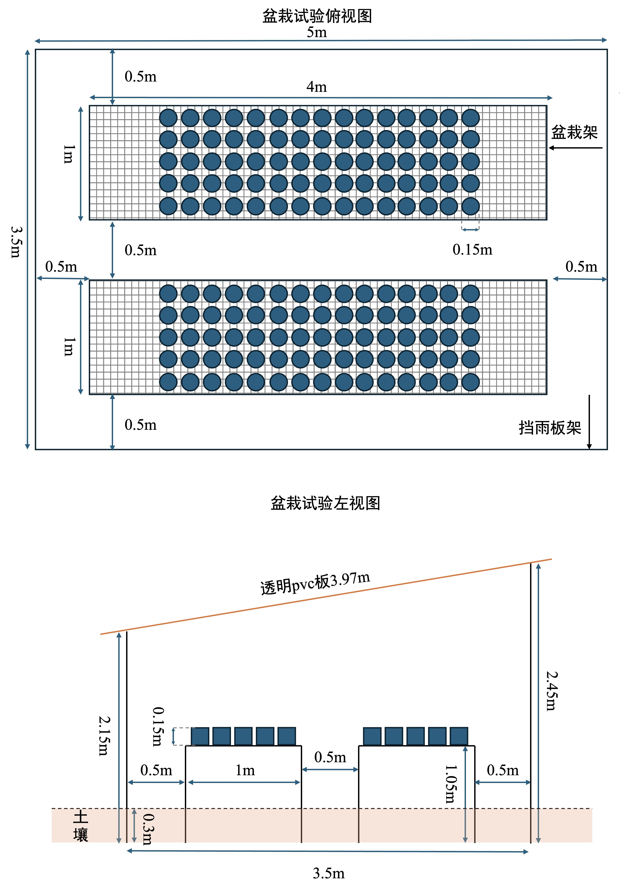

使用注意事项 Operating Notes
盆栽应均匀摆放，避免局部荷载过大。强风、暴雨等极端天气前后， 应及时检查框架、板材及连接部件。 Distribute pots evenly and avoid excessive localized loading. Inspect the frame, panels, and connections before and after severe weather.
野外实验设施 Field Experimental Facility
面向植物生长、根际互作过程研究的标准化野外盆栽平台。 A standardized outdoor potting platform for the study of plant growth and rhizosphere interaction processes.
基本信息 Basic Information
设施采用统一的结构与材料配置，为盆栽提供稳定、整齐且便于维护的实验空间。 The facility uses a unified structural and material configuration to provide stable, orderly, and maintainable space for outdoor pot experiments.
核心能力 Core Capability
工作台可容纳约170盆植物，并通过均匀布置减少局部荷载差异， 便于开展重复性高、条件相对一致的野外控制实验。 The workbench accommodates approximately 170 pots and supports even spatial arrangement, helping reduce localized load differences and improve experimental consistency.
原始设计 Original Design
设计图由网站维护人员在 GitHub 仓库后台上传和替换。 The design drawing is uploaded and replaced by the site administrator through the GitHub repository.

工作照片 Work Gallery


使用与维护 Use and Maintenance
盆栽应均匀摆放，避免局部荷载过大。强风、暴雨等极端天气前后， 应及时检查框架、板材及连接部件。 Distribute pots evenly and avoid excessive localized loading. Inspect the frame, panels, and connections before and after severe weather.
建议记录检查日期、维护内容、负责人和设施状态， 以确保长期运行信息完整、可追溯。 Record inspection dates, maintenance actions, responsible personnel, and facility condition to support long-term traceability.